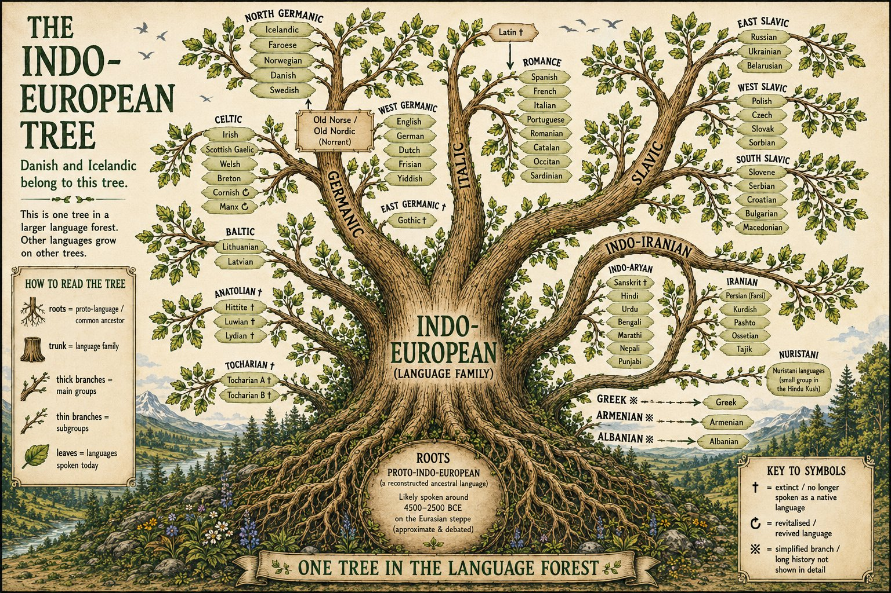
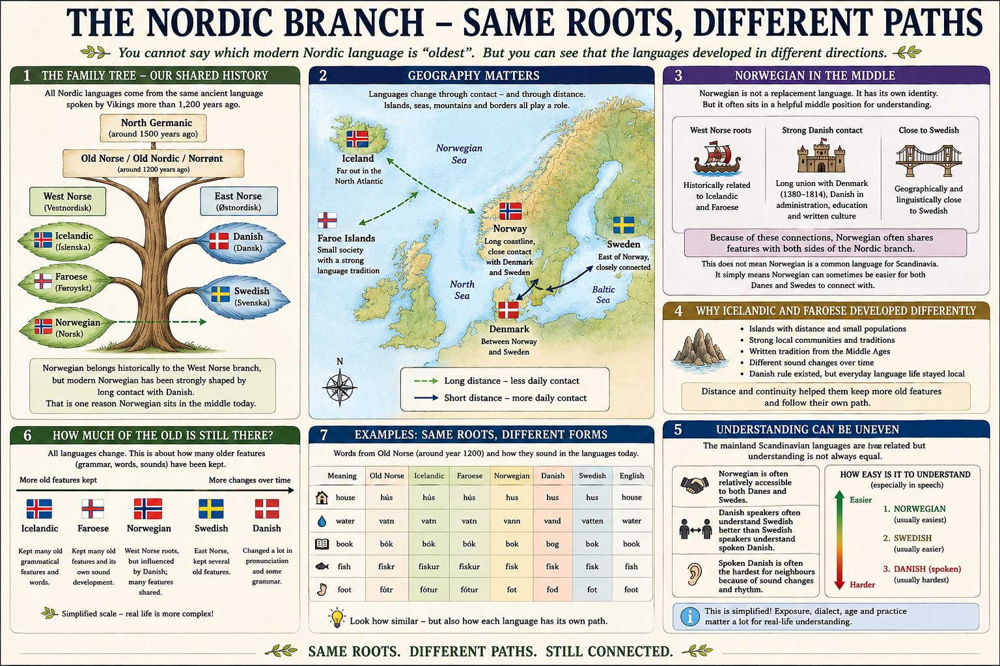
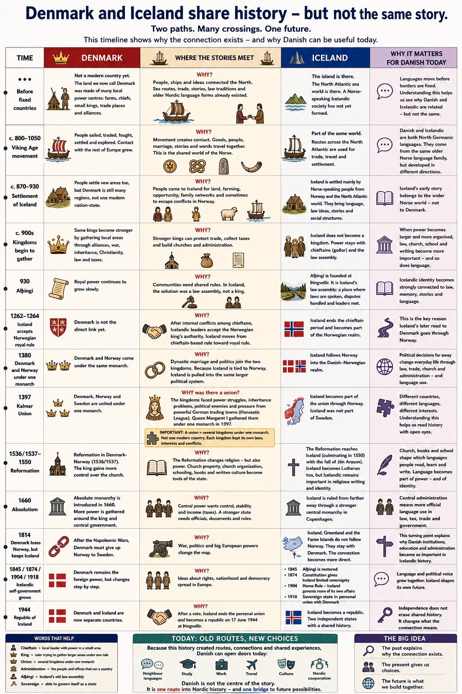

I was applying for a Danish language teaching position at an Icelandic school with a linguistically diverse student body, many of whom had Icelandic as a second language. As part of the application, I developed introductory materials for the subject.
The design question was not primarily about Danish. It was about students: how do you introduce a subject to an audience that includes both native Icelandic speakers who may question its relevance, and students for whom Icelandic itself is still a working language? Both groups arrive with a different relationship to language, and both have more to bring to this material than they typically realise.
These materials were designed around that premise. Not as a replacement for existing teaching practice, and not as a critique of it. One possible starting point, built around what students already carry with them.
The core insight the materials are built around is documented: modern Icelandic is the closest living language to Old Norse, the common ancestor of all Nordic languages (Eythórsson, 2006). Iceland's geographic isolation shielded the language from the contact-driven changes that reshaped Danish, Norwegian and Swedish over the same period (Haugen, 1976). For native Icelandic speakers, this means the structural distance between their language and Danish is shorter than it appears.
For students with Icelandic as a second language, the picture is different, but the starting position is not weaker. Research consistently shows that bilingual and multilingual students develop stronger metalinguistic awareness than their monolingual peers: a heightened ability to observe language as a system, notice patterns across languages, and work with linguistic structure rather than simply through it (Bialystok, 2001, 2018; Bialystok et al., 2012). Where a native Icelandic speaker may recognise that hús and hus are the same word, a student who already moves between two languages may be the first in the room to notice that the pattern holds across the whole column.
Carries the structural proximity to Old Norse. Modern Icelandic preserved more of the original language than any other Nordic language. The connection to Danish is shorter than it looks.
Carries metalinguistic awareness built through navigating multiple language systems. Research shows this translates into stronger pattern recognition and structural sensitivity when encountering a new language.
Different students enter through different doors, but the same work is available to all of them: noticing patterns, tracing connections, building understanding from what they already have. In a mixed classroom, this is not a problem to manage. It is a resource. Each student sees different things. Together, they see more.
Each piece is designed as a separate entry point into the same set of ideas. They work in sequence, but also independently. The discovery can start anywhere..

The structural starting point: where do these languages actually come from, and where does Icelandic sit? Before any history is introduced, students can see that the connection between Icelandic and Danish is not political. It is genealogical.. Icelandic sits on the branch that kept most of the original language. That is the first thing to find.

Zooms in to show exactly where Icelandic and Danish share an ancestor, and why they developed differently. The scale from "more old features kept" to "more changes over time" invites a question: what does it mean that Icelandic changed less? The map adds geography as an explanation, not a judgment about which language is more correct, but a structural reason why they sound as different as they do.

Answers the historical question: how did these two languages end up so entangled? The "WHY?" column is the central design decision. It turns a list of events into an argument. Explanatory notes are included throughout for concepts a student without prior historical knowledge might not recognise. The timeline ends in 1944 with Iceland's own choice, framing the connection as something Iceland decided to carry forward on its own terms.
The question students actually ask, answered not by a teacher or a textbook but by the Nordic countries in a group chat. Iceland asks throughout. Finland was deliberately chosen to carry the structural argument, as the one country in the group with no Scandinavian language, it has nothing at stake in the answer, which makes the explanation easier to hear. The humor earns the attention. The ending lands without triumph: "That one you will have to take up with history." An honest answer, which is exactly what the format is designed to deliver.
These materials are presented here as a single example of how I approach a communication problem: start with what the audience already has, make it visible, and let the work follow from there. Not as a finished curriculum. Not as a claim about what works in every classroom. As one starting point, designed for one specific context.
The underlying design question is not specific to language education. It is the same question that runs through the other pieces in this portfolio: how do you reach an audience that has already decided the subject has nothing to do with them? The answer here is the same as elsewhere: begin with what they already know, even when they do not know they know it.
All ideas, structure and content decisions were mine. Visual execution was done in collaboration with AI tools, with each version revised until it matched the brief. Produced independently, without commission, as preparation for a job application.